Kohi asked me if I wanted to go to a community yard sale in Tacoma. Now, usually I like to avoid risking my life in Tacoma without bodyguards, but for a big yard sale? I'm in.
It was in a neighborhood called Fircrest which was actually very clean and safe. If you are moving to Tacoma, check this place out!
I probably had the worst find of any of my yard sale runs! I spent a total of $1 on the hair thinning scissors and the rest was free. I saw nothing really worth buying. There were very few old items. I can't tell if it's because this is a yearly event and everyone already sold their old stuff or if everyone in this area hasn't lived there very long. A lot of items were new and lower quality. If I needed to recreate my kitchen, I could have gotten some good deals, but my kitchen is in a storage unit so no need for that.
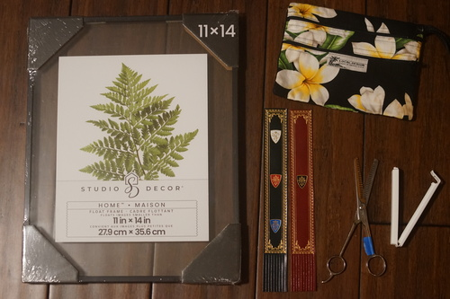put some pens in it probably. you know I have no shortage of pens.
I always enjoy spending time with Kohi though so I'm not complaining. Fircrest was a lovely neighborhood to explore and everyone was friendly.
 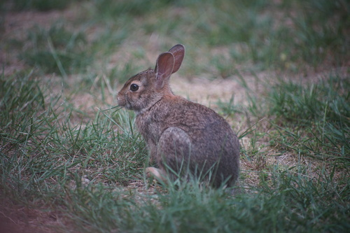
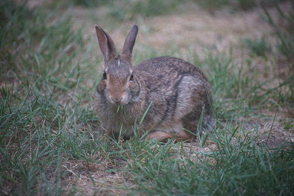
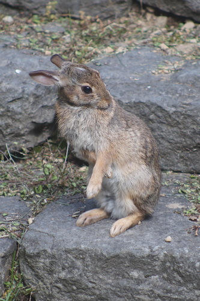
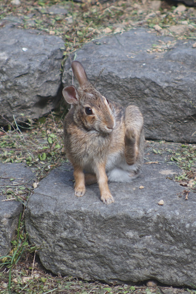
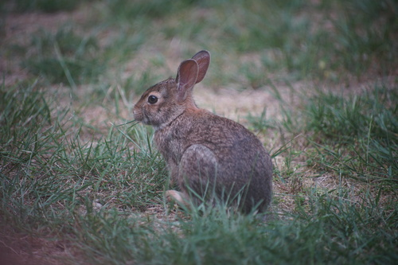
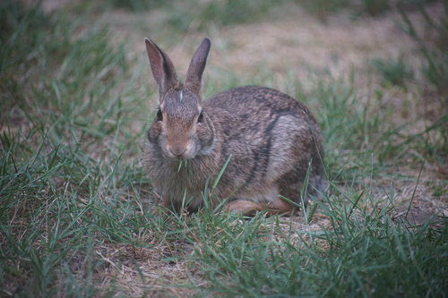
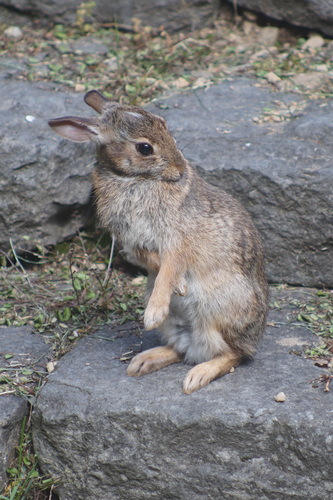
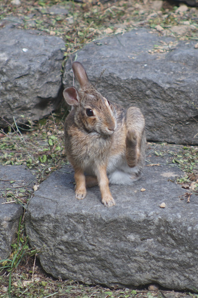
🚨RED ALERT!!!🚨 RED ALERT!!!🚨
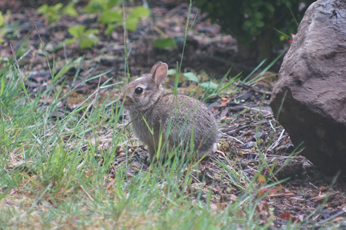the most blessed sighting. the bunny the size of a large hamster..... my kokoro!!!
He's very jumpy and fast so I hope to get more pictures of him later. This is the best I could do for now.
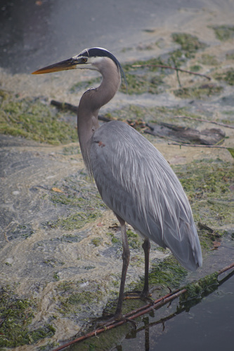 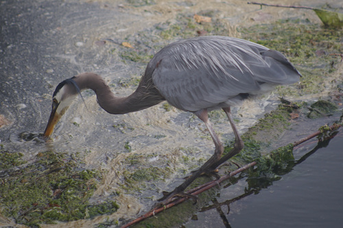 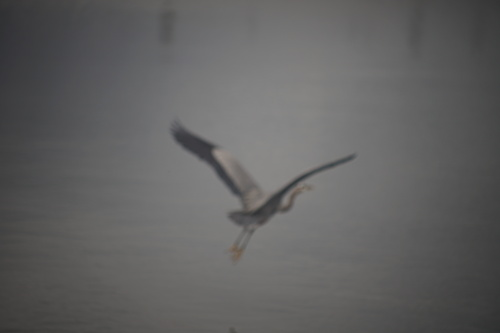 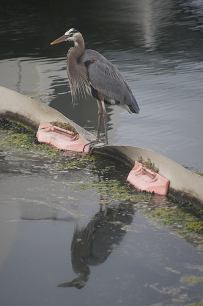 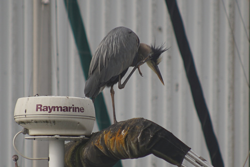
I finally got out the hair straightener, foam ball, hair gel, etc to style Volta's 2 new wigs. I didn't love how the Leeke wig with the blonde strip turned out and I'll try again, but here's the Msire wig.
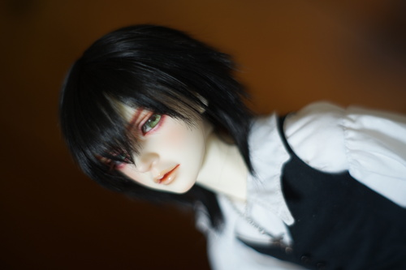 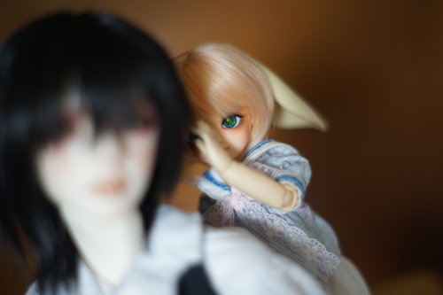 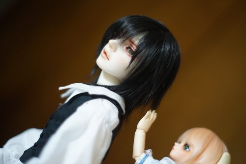 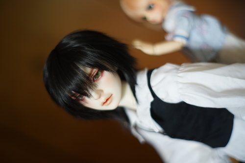I was inspired to take another family portrait after styling wigs for Volta. I didn't have a TV this time to check eye contact from a distance but I made it happen. It's been a whole year since the last one!

I somehow posed Volta's hand in exactly the wrong place and posted it online before noticing his... anyway! It's photoshopped now! Nothing to see here!